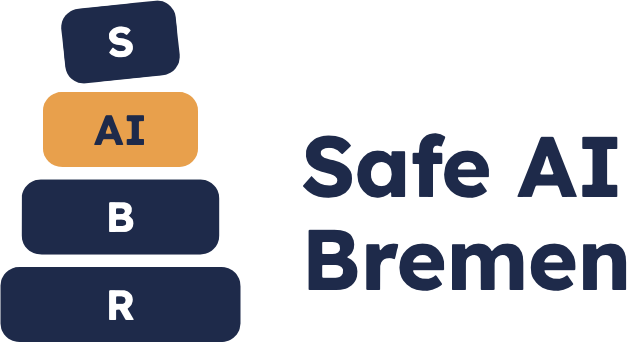

Woran erkennen wir, wann ein System versagt?
Ein KI-Modell kann einen Test bestehen und im Alltag trotzdem Fehler machen. Wie lassen sich Tests entwickeln, die solche Schwächen schon vor dem Einsatz aufdecken?
Wir sind eine Gruppe für alle in Bremen, die verstehen wollen, welche Risiken von fortgeschrittener KI ausgehen und was wir dagegen tun können.

Ein KI-Modell kann einen Test bestehen und im Alltag trotzdem Fehler machen. Wie lassen sich Tests entwickeln, die solche Schwächen schon vor dem Einsatz aufdecken?
Der Einsatz eines Systems betrifft auch Menschen außerhalb des Entwicklungsteams. Welche Nachweise sollten die Verantwortlichen vorlegen und wer sollte sie prüfen?
Vielleicht kennst du diese Fragen aus der Informatik, der Politik oder der Philosophie. Vielleicht sind sie dir beim Umgang mit KI begegnet. Auch mit einer ersten offenen Frage bist du hier willkommen.